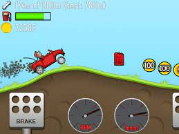
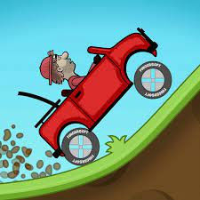
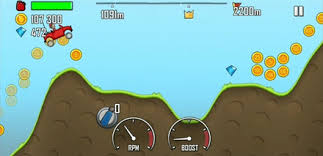

The Hill Climb is 2D racing video game.The player controls a driver across hilly terrains, collecting coins along the way and spending them on vehicular upgrades while being watchful of the driver's head as well as the vehicle's fuel supply.in this game we have simple control.we add two button for drive car forward and backward.We add fuel system if the fuel was low the game will be over.The player can perform stunts such as driving the vehicle into the air for a prolonged time or flipping it over to earn more coins, which after the race may be spent on upgrades or to unlock new stages and vehicles (including car and new way)
Play the original classic Hill Climb Racing! Race your way up hill in this physics based driving game!
Play for free and also playable offline!
Face the challenges of unique hill climbing environments with many different cars.
Gain bonuses from daring tricks and collect coins to upgrade your car and reach even higher distances. Watch out though
Bill's stout neck is not what it used to be when he was a kid! And his good old gasoline crematorium will easily run out of fuel.
preteens and teenagers.who like smooth car game and enjoy to drive it.
Fun Game
  true-to-life automotive journey
One of the most addictive and entertaining physics-based driving game there is. It's fun, fast and free - get into adventure mode and race.The story of the game is one man drive the car and collect coins for upgrades her car tyres etc.we provide them a one complete raod to drive car and enjoy the game.